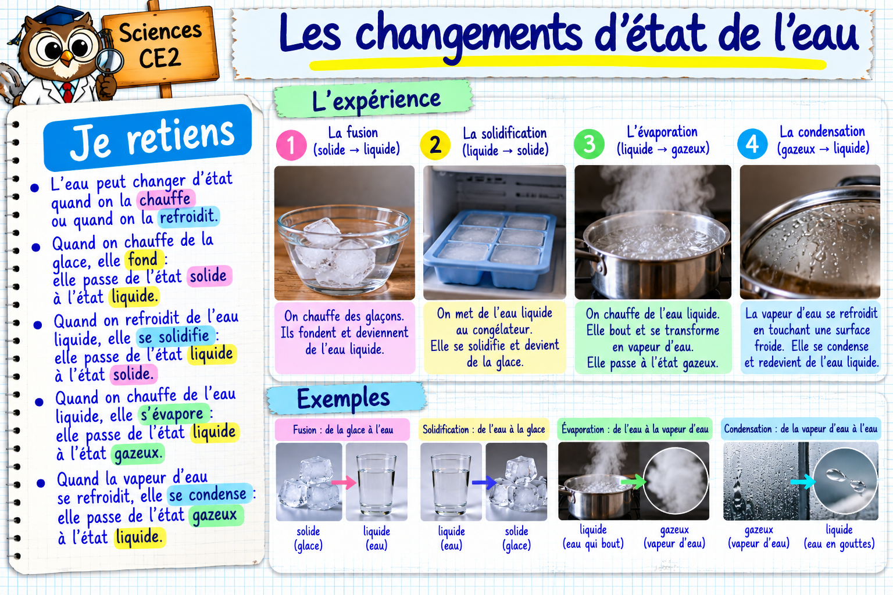

← Sciences CE2
Maître Hibou · Sciences

Je m’entraîne avec Maître Hibou
Observe, manipule et cherche. Tu peux recevoir un indice avant de réessayer.
Exercice 1 / 10
Vérifier ma réponse
Exercice suivant →
Recommencer